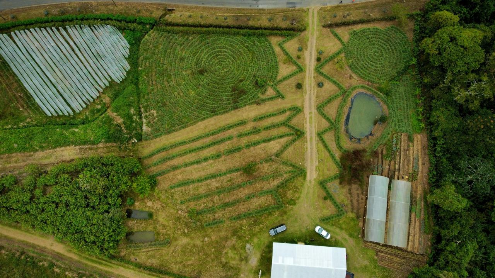
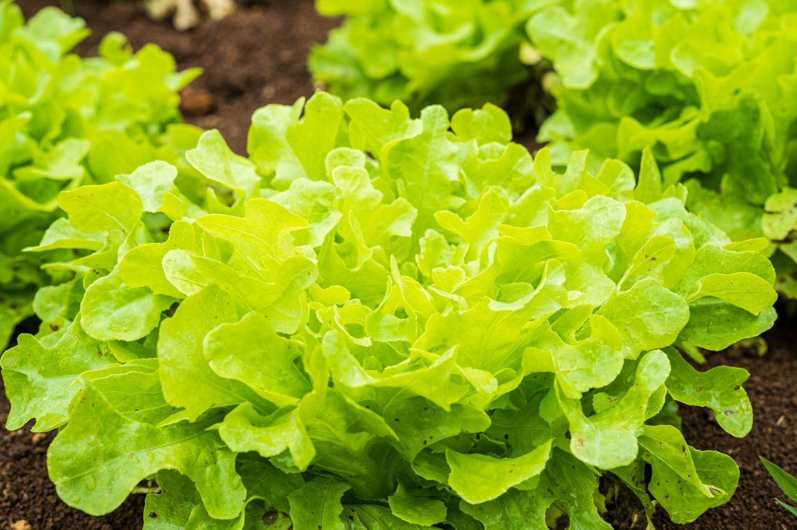
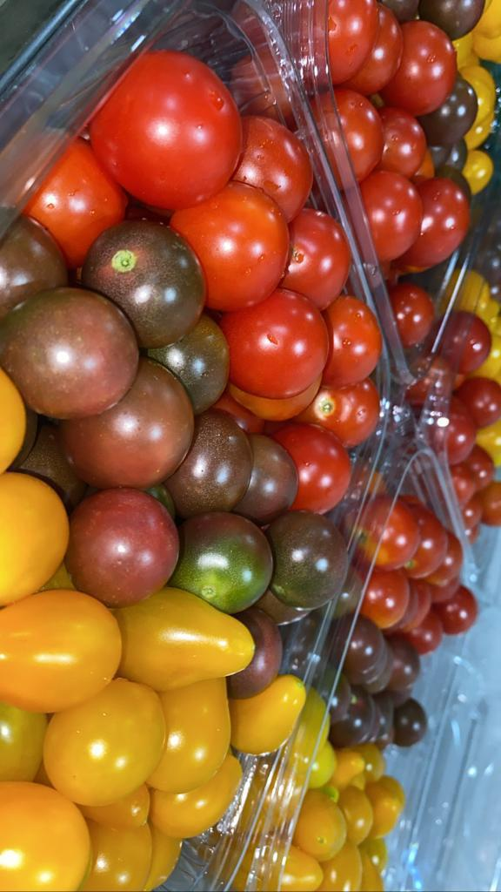
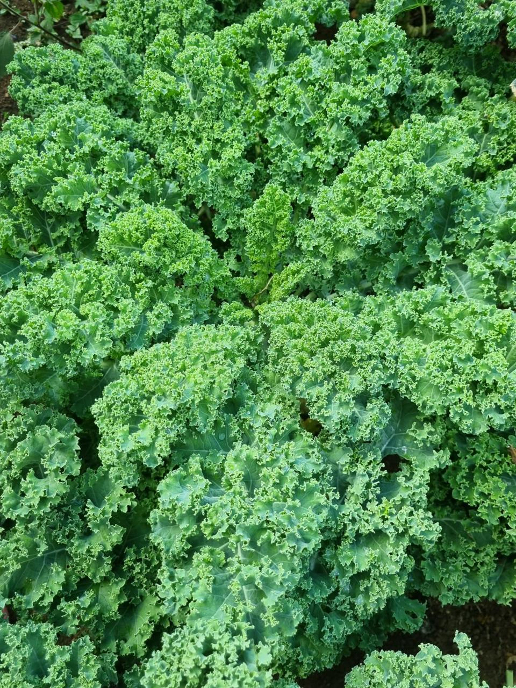
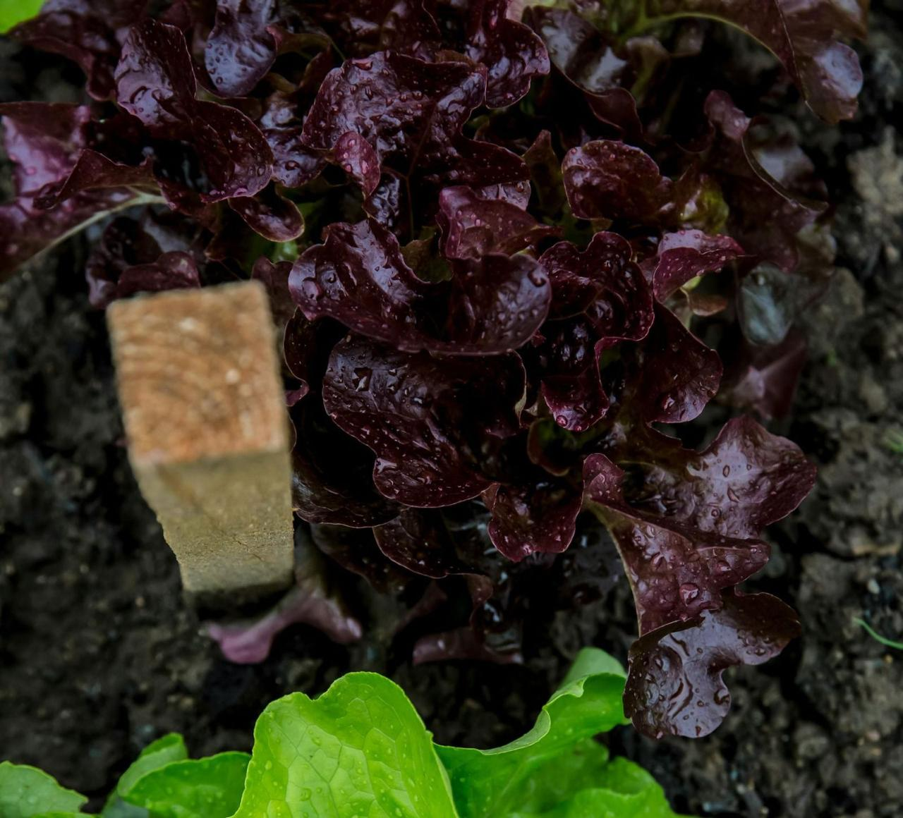
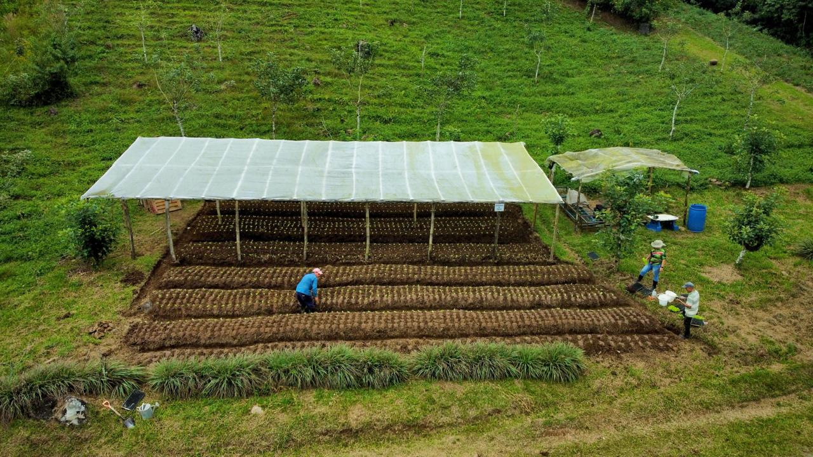

Desde nuestra finca hasta tu mesa, cultivamos con respeto por el suelo, el agua y las generaciones que vienen.

Ecofarming Solutions nació del amor por la tierra costarricense y la convicción de que es posible producir alimentos de alta calidad sin comprometer el ecosistema que nos rodea.
Nuestra finca es un sistema vivo: rotamos cultivos, respetamos los ciclos naturales y trabajamos en armonía con la biodiversidad local. Cada hectárea tiene una función; cada planta, un lugar.
Creemos que el origen importa. Por eso somos transparentes sobre cómo, dónde y quiénes producen lo que llevamos a su mesa.
Enriquecemos la tierra con compost natural y abonos orgánicos antes de cada siembra.
Usamos semillas no transgénicas y respetamos los tiempos y ciclos de cada cultivo.
Riego eficiente, control biológico de plagas y rotación de cultivos en toda la finca.
Recolectamos, seleccionamos y empacamos para que llegue fresco y en perfecto estado.
Ubicados en un microclima privilegiado de Costa Rica, nuestros suelos volcánicos ricos en minerales y el acceso a agua limpia nos permiten cultivar sin necesidad de intervención química.
Trabajamos activamente para devolver a la tierra lo que tomamos: compostamos residuos, conservamos la cobertura vegetal y mantenemos corredores de biodiversidad en los límites de la finca.





¿Quieres conocer cómo cultivamos, hacer un pedido o establecer una alianza? Escríbenos, con gusto te atendemos.
💬 Contactar por WhatsApp